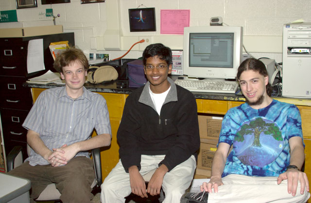

Interactive Web Physics
The Interactive Web Physics Software System uses the latest Java technology in order to allow teachers to create their own web-based, interactive problems without the need for programming or scripting. Students access these problems directly from the IWP server.
News
(Major Announcements will be posted here - to get recent minor updates and working notes, check out the developer log forum)
6/21/00 Brothers Pizza meeting scheduled for Saturday noon.
7/25/00 Brockman officially decided that we need a logo, and put up a new screen shot.
4/30/01 Ok.. working on test GUI harnesses. It's been a while. new screenshot.
Releases
No official public release of code that this point (it's open source, but the tree is just too messy right now!) If you really want it, you can download it out of the CVS Tree.
Screenshots (Everybody loves screen shots!)

04/30/01 - the GUI Test Framework

07/25/00 - The new object icons!
Links
SourceForge Projects Page
NCSSM IWP Server
NCSSM Interactive Web Physics Problems
the unadulterated brockman. (temporary holding spot)
Contacts
Taylor Brockman <brockman@pinpoint.com>
Developers

Left to Right: Taylor Brockman, Milind Kulkarni, Ben Lee
Go Sourceforge!